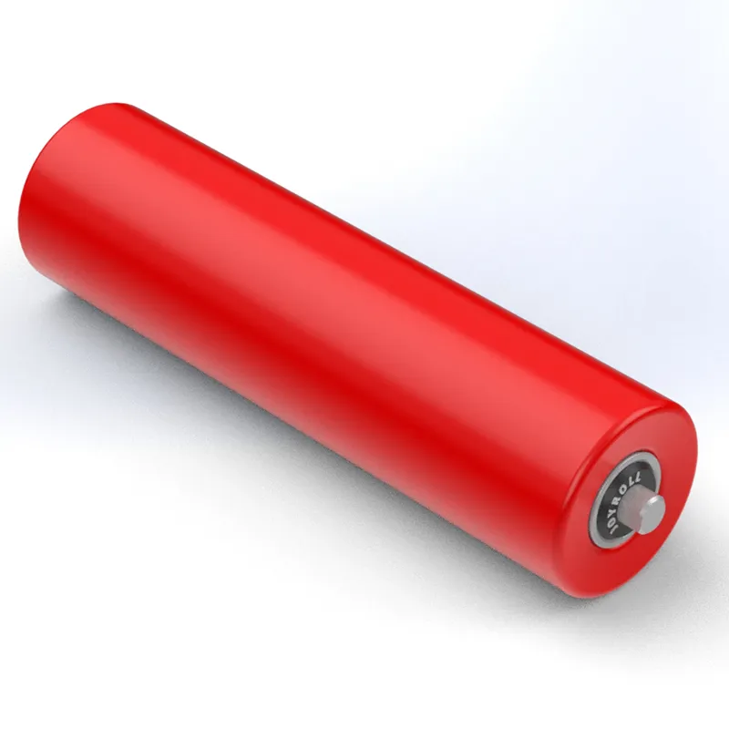
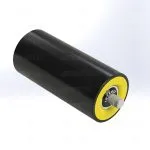
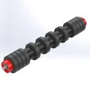
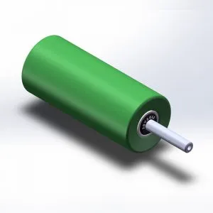
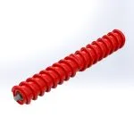
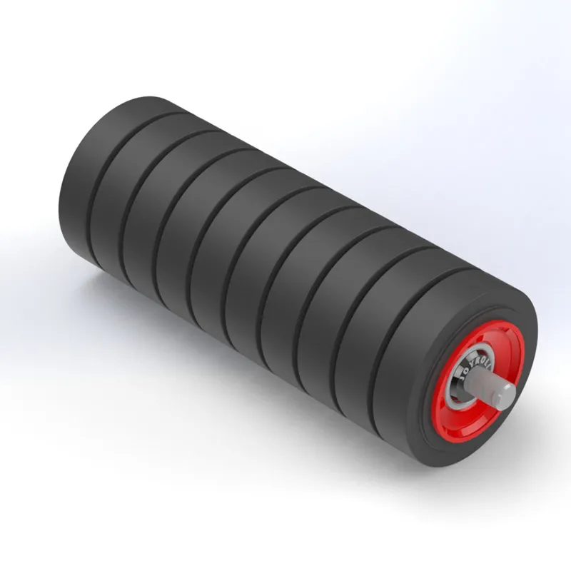
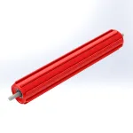
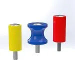

Uluslararası standartlara uygun, dayanıklı ve yüksek performanslı rulo çözümleri.

Taşıyıcı ve dönüş tarafında yük desteği sağlayan temel konveyör bileşeni. Özel ölçü ve uluslararası standartlarda üretim.
Teklif Al
Yükleme ve transfer noktalarında, serbest düşen malzemelerin banta vereceği zararı sönümleyen darbe emici kauçuk kaplı rulolar.
Teklif Al
Bant yüzeyinde malzeme birikimini önleyerek aşınmayı ve çap farklılıklarından doğacak bant sapmalarını engelleyen dönüş ruloları.
Teklif Al
Konveyör bandının hizasını koruyan, bant kaymalarını ve sistem aşınmalarını önleyen güvenilir kılavuz ve denge ruloları.
Teklif Al
Kendi kendini temizleyen özel konstrüksiyonu sayesinde yaş ve yapışkan dökme malzemelerin bant altına birikmesini engeller.
Teklif Al
Mobil kırıcı ve elek makinalarının standartlarına tam uyumlu olarak üretilen, bant aşınmasını kontrol altına alan sabit açılı rulolar.
Teklif Al
Banta yapışma eğilimi gösteren zorlu malzemelerin birikmesini engellemek için özel olarak geliştirilmiş operasyon verimi sağlayan rulolar.
Teklif Al
Konveyör bandının hizasını kesintisiz korumak için tasarlanmıştır. Bant hasarlarını engelleyerek taşıma sisteminizin toplam ömrünü artırır.
Teklif Al KGMSAN
KGMSAN